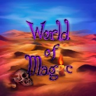

Circle
Авторы: Михаил Козырев, Алексеев Матвей, Николай Терещенко, Игорь Энгель
Качевственный скайблок с великим и ужасным Грегом,
более 350 квестов, измененные крафты,
интеграция модов и много другое!
более 350 квестов, измененные крафты,
интеграция модов и много другое!
TerraFirmaGreg
Авторы: Михаил Козырев
The most realistic modpack on the Earth

World Of Magic
Авторы: Михаил Козырев, Игорь Энгель
Вы когда нибудь хотели объединить все дополнения к таумкрафту?
А добавить туда крови и страданий ^o^?
Здесь есть все! Боль! Смерть! Данжи! Квесты! Сюжет! Ну и конечно, мнооого магии!
А добавить туда крови и страданий ^o^?
Здесь есть все! Боль! Смерть! Данжи! Квесты! Сюжет! Ну и конечно, мнооого магии!
Thermal Science
Авторы: Михаил Козырев
Эта сборка подходит любителям Лоу-Теха и создана для раслабления и изучения модов,
которые подобраны под одну тематику!
которые подобраны под одну тематику!